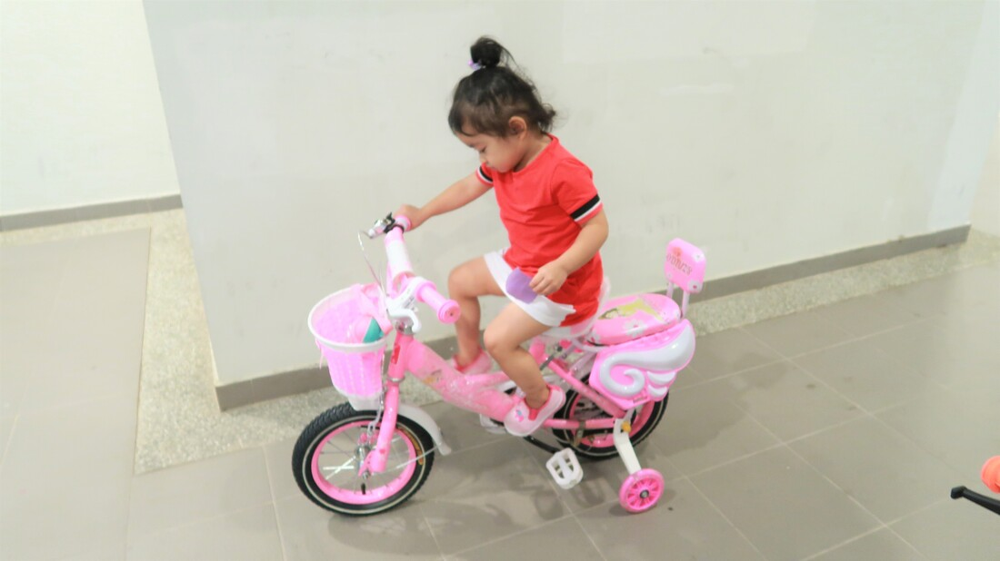
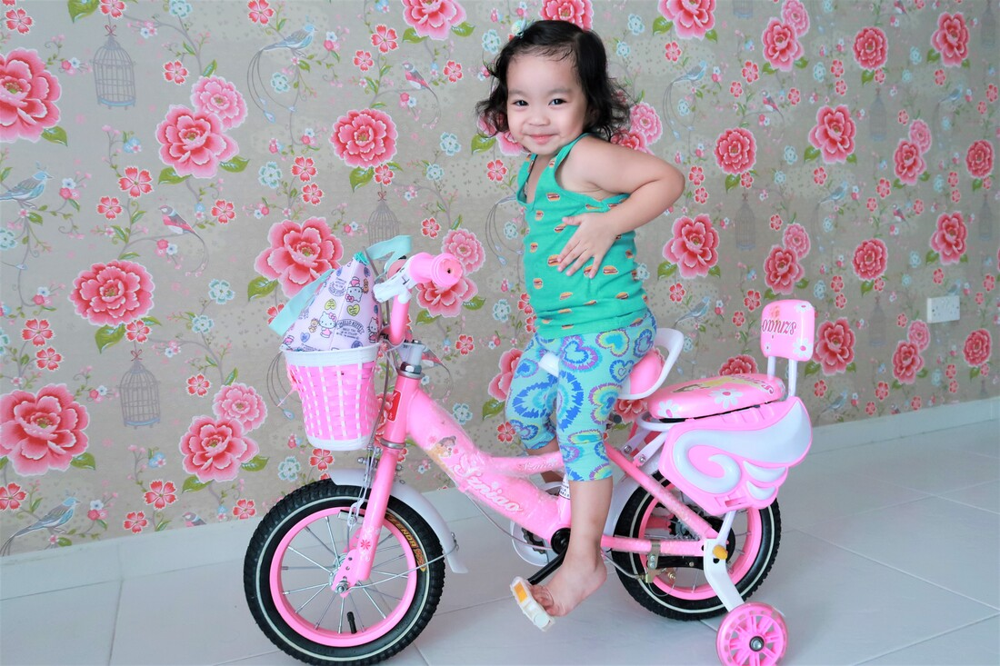
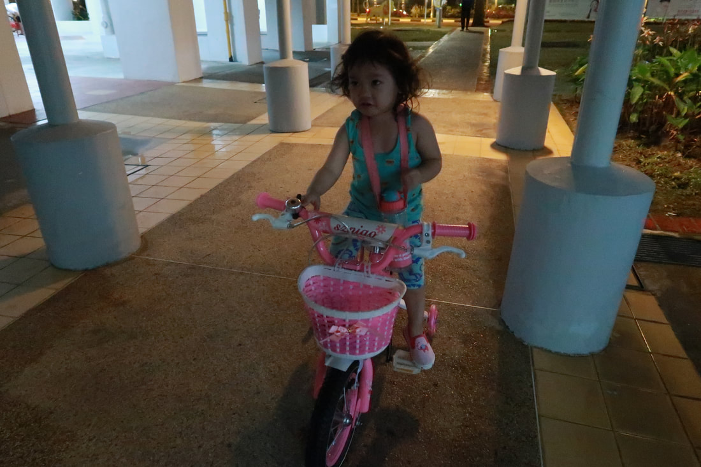
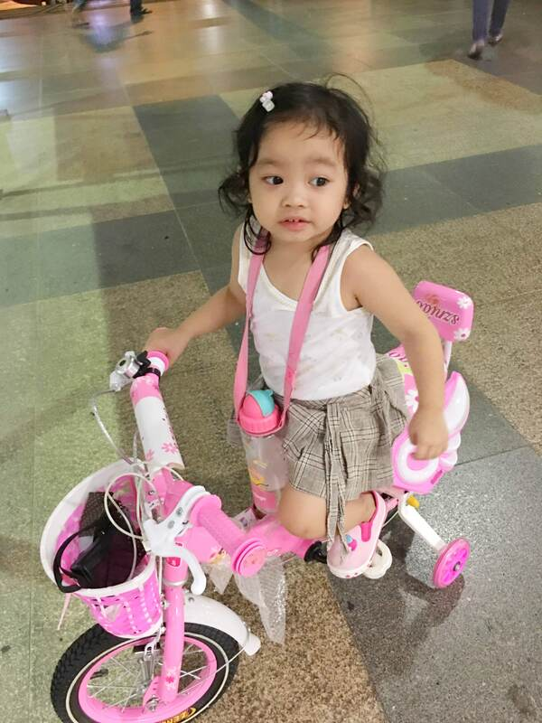
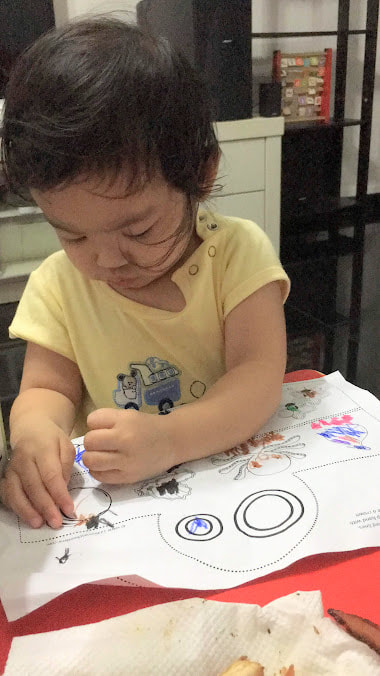
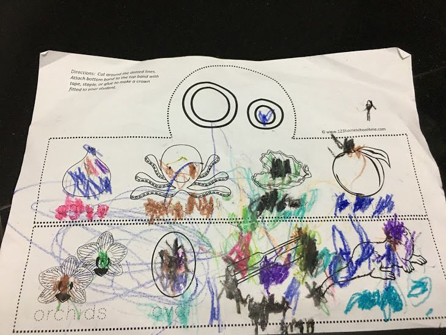
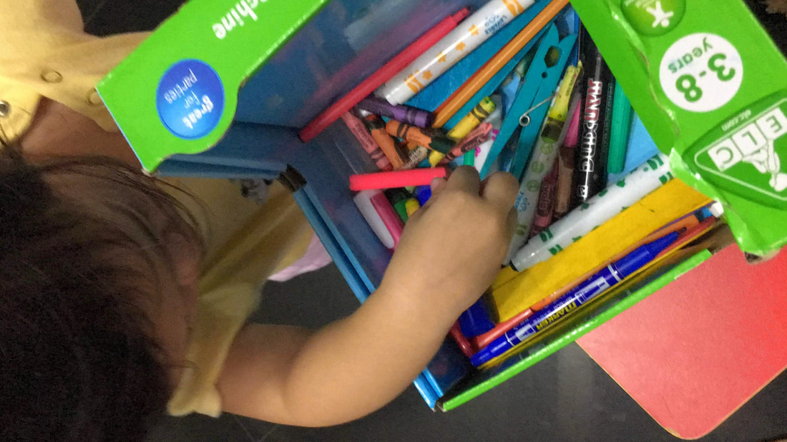
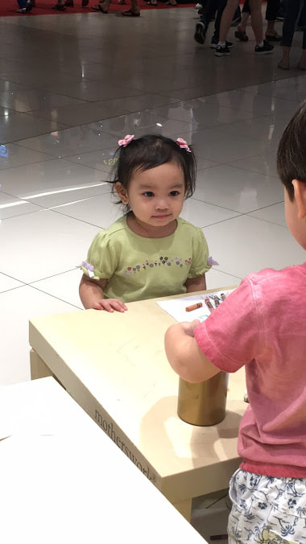
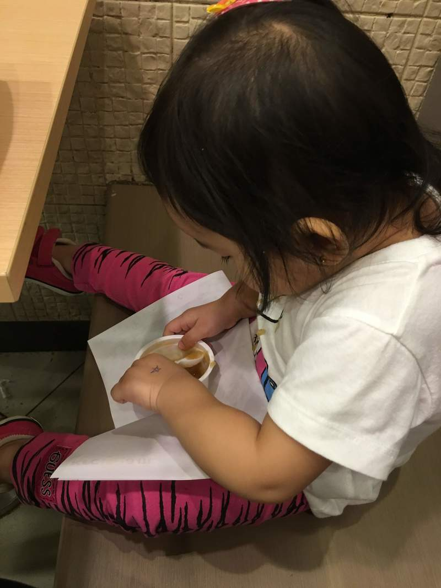
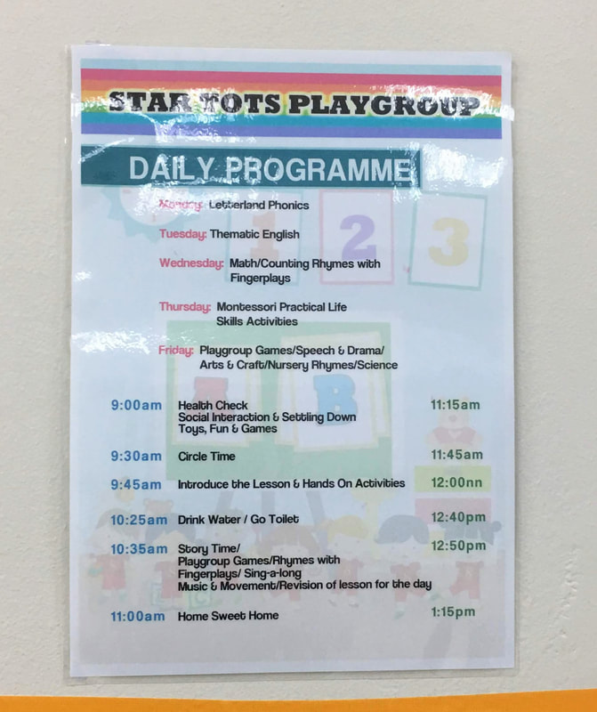

|
After church, sabay sabay kaming kumain sa HF then pumunta kami sa taas ng Vivo.
Kahit sobrang init, sobrang saya naman kasi nakasama namin sina Ate Cathy and Kuya Mike with kids. Sa taas ito ng Vivo City Madami ding tao kahit katanghaliang tapat. Nakakatuwa :) Thank you, Lord for this day!
0 Comments
Nakakatuwa ang mga bata. Mababaw lang ang kaligayahan nila. Matagal na naming balak na mabigyan siya ng bicycle. Pero dahil sa twing magtitingin kami at pinapatry sa kanya, hindi nya pa rin abot ung pedal. Kaya sa twing makakadaan kami sa mga tindahan, tingin tingin lang muna at try try lang. Wala pa ata siyang 2 years old noon noong nagtry kami na maghanap. Now is mag 3 years old na siya.😅 Nakakatuwa kasi kahit alam kong gustong gusto niya ng bicycle, never siya nagpumilit na bumili. Tama na sa kaniya ang mai-try lang muna. Masaya na ang bata. Basta sabihin namin na “bye na muna”, kahit gusto pa nya, aalis siya at magba-ba bye sa bicycle. Kanina ay galing kami sa OB, then napadaan kami sa cash converter. Sakto may bicycle doon. Then, nabanggit ko sa kaniya na "I will buy bicycle for you." Hindi namin siya binili kasi try pa din ako makahanap ng iba pa. Hanggang sa umuwi kami ng bahay, talagang banggit banggit niya ang bicycle. Nakatulog na siya na un ang bukambibig. Sakto naman na naghahanap na ako online, sa Carousell. Abangers ako ng mura na maganda. Then, nakakita na ako! Bago pa. Ang alam ko ay distributor siya ng bicycle.Thank you, Lord! Sa tingin namin ay sakto lang sa kanya ung nakita ko. Chinat ko na agad. Napagusapan namin ng Dy, na ibinili na namin siya. Kita namin ang pagkagusto niya at first time niya ipakita ang ganoong emotion. Since hindi rin naman sadia kami mabili ng mga laruan niya, so oks lang na investment na din. Kaya habang tulog ang bata eh, usapan namin ng Dy na pagkagising ni Yanah ay pipickupin namin ang bicycle! ❤️❤️
 Tinatry niya :)  Aug 26, 2019  Nagtry kaming lumabas :)  Nagrequest siya na., "I want to cross the street, MOm, Please...". So, hayan, pumunta kami sa malapit na mall, at hinintay na din namin si daddy! "I miss you, Daddy!" Yan ang bungad nya lagi sa Daddy niya pagkakadating sa bahay galing sa work.
Sobrang nakakatuwang marinig ang mga salitang ito kay Yanah. Napansin ko tong sinasabi nya lagi ng mga 30+ months old na siya. Hindi ko naman siya sinasabihan na sabihin yun. Kaya syempre, tanggal agad ang pagod ng kanyang Daddy. We love you, Yanah! Thank you, Lord for our loving daughter. Salamat sa pagiging sweet niya parati sa amin. Sa twing may pagkakataon, nayakap lagi sa amin na sobrang feel na feel nya. We are so blessed to have you, Anak! oh yes! Ang bilis ng panahon. Isa sa pinagpapasalamat ko being a mom is that kasama ko siya araw araw. Isang pangarap ng halos karamihan sa ating mga Mommies. Pero dahil dala ng pagkakataon dahil kailangang magwork ay hindi nila nakakasama lagi ang kanilang mga anak.
Anyway, if you are a MOM praying na sana bigyan kayo ng madaming time na magkasama, my prayers are with you. So, for tara na! Share ko lang ang update ni Yanah. I find it na magandang gawin kasi sobtra kong makakalimutin. At kung hindi ko sisimulan, siguro, after ilang buwan eh limot ko na ang mga ganap about kay Yanah. HEIGHT AND WEIGHT: Okay! isa yan sa lagi kong nababanggit sa Dy. Minsan kapag may nakakasabay si Yanah na kalaro, inuunahan ko na, na maliit sadia siya. May mga nakakasabay siya na 1 year old eh halos kasing tangkad lang niya. Pero sabi naman ng Doctor nya last March 2019 siguro un, ok naman daw si Yanah. Ang heioght nya ay 84cm. WEIGHT: last February naging 12kg.. kaso nagkasakit siya kaya naging 10.5kg.. ang baba agad.. ang tagal niya sa 10. something dati. VOCABULARY: Ang dami nyang words na alam, ang pinaka nakakaamzae sa knya eh kapag may nababanggit siya na mapapaisip kami, san nya napulot yung words na yun. Ang galing ng kanilang memorya. Trulalu na malaking bagay ang: > "Reading". Nalawak ang kanilang vocabulary. > "Talking to her". Tagalong and English ang alam niya. Nagsasalita ako ng English then tinatagalog ko. Gusto ko din kasi na alam nya ang Tagalog at hindi lang English. Yung English madami pa siyang matutunan kapag pumasok siya. Pero mahalaga din na natretrain nga sa bahay. > Watching videos. Actually, bago ko inimplement ang "NO GADGETS", aminado ako na isa sa nakatulong sa knya ay ang panonood. Usually, ang pinapanood ko sa knya ay yung mga rhymes or may tono kasi alam ko na interest nya yun. Nakikita ko ngaun sa knya na binabago nya na ang lyrics pero same ang tono. Iniiba bya base sa knyang ginagawa. Nakakaproud. Madaming mga Mommies ang nagsheshare na ganoon din nga din daw mga anak nila. Ang galing! SHE LOVES TALKING. Walang timo ang bibig nya.. heheh..Kung hindi sha nagsasalita eh nakanta sya. Buhay nya ata ang pagkanta as in. Gustong gusto din nya ang pagsayaw. Nakakatuwa lang na makita ang mga talent na yun. SHE LOVES COLORING. Yung isang book nya puno na ng mga kulay kulay. Nakita ko din ang progress ng pagkukulay nya. As in ngaun alam na nya pano magkulay nga. Mahilig din sha magdrawing at magimagine kung ano yung drinaw nya. Minsan magdraw draw ng circle, sasabihin nya eh "rocks" daw yun., Tapos na iidentify nya na "small circle" and "big circle" daw yun. SHE LOVES her TOYS. Isa sa mga tinuro namin sa knya eh yung alagaan ang lahat ng gamit niya. Hanggat maari eh wag itatapon, sisipain, basta hug lang or gamitin. Thank God naman namin tanda nya lahat ng yan. Minsan isinasama nya sa labas. Minsan si Teddy bear, Minnie mouse, Mickey mouse, baby Mio, Dolly, Unicorn. Then kapag sinasama nya, sinasabi namin na kwentuhan niya let say si Unicorn, kunga anong nakikita niya. Today is Monday!
Sobrang saya! Kagabi pa lang, sabi ko talaga sa sarili ko eh kailangan kong maisulat ito kasi baka ko makalimutan. Sobrang makakalimutin ko and ayaw kong malimutan ang nangyari kagabi bago kami matulog. So un nga, kahapon, late na din kaming nakauwi ng bahay kasi nagpunta pa kami sa Giant sa Tampines. So, pagkadating namin sa bahay eh target na agad namin eh makatulog na. So recently eh iniimplement ko na sa sarili ko na "no cellphone sa bed". So kagabi nga, habang kami ay nakahiga, nakapag-goodnight na sa isa't isa eh si Yanah eh alive na alive pa din. Pero alam ko na malapit na ding matulog. Then, imik pa din sha ng imik. May time na may kinakanta pa. Nilalaro pa ang mga kamay. Then biglang sabi nya ng pabulong, "Thank you Lord!". Katabi ko lang din naman sha sa higaan. Sabi nya, "Thank you, Lord...." may sinasabi sya,, hanggang sa nagkukulbitan kami ni Adrian. Yun pala eh rinig din nya. Tapos, nababanggit pa niya yung.. "Thank you Lord for giving me...." hindi ko na mashado narinig ang mga kasunod. Then.. nabanggit nya ang "Daddy" Mommy" and "Ate Gem". Tapos sinasabi din nya eh 'Thank You Lord, Amen.." then, tatahimik siya after. Then, babanggitin nya ulit yung "Thank you, Lord". Sobrang saya sa feeling. Actually, kagabi nawala na sa isip namin na magpray. Tapos, biglang naalala niya. Hindi naman niya ako sinabihan na "Let's pray". Siya mismo ang nagpray ng kanya. Nakakatuwa. Hindi din niya alam na naririnig namin. Kasi kung alam nya na gising kami eh sasabihin noon eh. "Mommy.. Mommy, Ikaw yan!" heheh Nakakatuwa lang. Then, hindi pa rin siya makatulog. Hanggang sa sabi ko, let's pray. Then nabanggit ko yung "Thank you Lord kasi sumakay kami ng bus.." After ko magpray, so tahimik na ulit kami. Nagpray ulit siya then inuulit nya yung about sa bus. Then, noong Saturday morning, nakakatuwa kasi, pagkagising nya, wala siyang ginawa kundi kumanta siya, Hindi nya ako ginigising kasi alam nya na tulog pa ako. Then nakatingin siya sa may bintana habang nakaupo. Kinakanta niya ay "God is so good..God is so good..God is so good, is so good to me." Sobrang sayang marinig. Kahit pabulol bulol pa minsan. Tapos maririnig mo. Kasaya! Thank you, Lord! Ang saya. Tunay nga na malaki ang role natin sa ating mga anak. Tayo ang modelo nila. At sobrang laki din ng nagiging impact sa atin ng ating mga anak sa buhay nating mga magulang. Sa mga panahon na ganto, yung tipong nakalimutan mong magpray, pero yung anak mo ay hindi. Patunay na sila ay living testimony na magpapaalala sa mga dapat ay ginagawa natin at hindi nakakalimutan. I praise God sa mga nangyayari sa aming buhay. Salamat Lord sa mga blessings. Sa mga simpleng bagay na patuloy mong pinaparanas sa amin. I pray na sa mga makakabasa nito ay patuloy nyong hipuin at ibless din ang mga buhay nila. Samahan sa araw araw kagaya ng pagsama mo sa amin. Salamat po Lord. God bless everyone! Thank You Lord kay Yanah. Napapansin ko na sobrang hilig niyang tumitig sa isang drawing. Ang hilig din niyang magrequest ng "color". Ibig sabihin ay magcocolor daw siya. Mahilig din siyang magsulat sulat. Hindi ko pa din alam if si Yanah ay kaliwete ba or kanan. Madalas ang gamit niya ay kaliwa. Actually, sobrang hanga ako sa kaliwete. Nakakahanga sila. Tanda ko dati may classmate ako na nabalian ng kamay at hindi nya nagamit ang kanang kamay niya kaya nagsulat siya gamit ang kaliwa niya. At naalala ko is nagpractice ako dati ng kaliwete, kunwari disable ang kanan ko. Sabi nila, may hidden talent daw ang mga ganoon. Going back kay Yanah, hayun nga. Sobrang hilig niyang magkulay. Nagiging seryoso siya kapag yan na ang ginagawa niya. Thank you Lord! Napakabuti mo kasi ginagabayan mo si Yanah. As we always pray, ang buhay ni Yanah ay para saiyo Lord. Gamitin mo ang mga talents niya for your glory alone. I am looking forward na magamit siya sa ministry na nakalaan mo para sa kanya. Kung ano man yoon eh andito lang kami na parents niya para gabayan siya at ieencourage. We thank you Lord sa bawat araw na sinasamahan mo si Yanah, itong aking munting pamilya. To God be all the glory!
 Eto oh, kaliawa na naman ang gamit niya. heheh  Look oh, ilanga araw din niyang binalikan ang paper na yan kaya lamutak na ang kulay. Nakakatuwa lang yung orchids kasi gitna lang may kulay talaga. Yung mata ng octopus! hehe. at ung sa oyster, nawala na ang pearl. hehe. kinulayan ng itim  hayan, diyan na nakalagay ang nga crayons nya at coloring materials, pati pala pangsipit nakasama na din. hehe. Nirecycle ko ang box ng bubble machine niya.
 Panay ang ngiti niya dito. As in alam mong ang saya saya niya. Nakakatuwa kasi enjoy na enjoy sha jan. Nakakalungkot lang isipin na yung external drive ko ay di na gumagana pano kasi eh napabagsak Sad to say, andoon lahat ng mga pictures ni Yanah from birth hanggang 3 months old siya at mga ibang files ko. Nakakalungkot kung babalikan ang pangyayari na yun. But, praise God! Buti na lang may group kami sa messenger at ang ibang pictures ay nakasave pa din naman doon. At praise God kasi nakapagpaprint naman ako ng pictures before masira ang external drive. Yey!
And dahil tuwa din akong magexplore at magdesign through free website gaya neto. Why not, gamitin ko ang mga pictures na yun para magkwento. Pero teka ah,. hindi po ako expert na manunulat ha. Anyways, buti na lang nangyari yung about sa external drive ko. So dahil d’yan, need ko ng simulan ang pagkwekwento ng aming mga karanasan through this site at gamit ang mga pictures namin :) Narealize ko lang this year na may Google photos pala. Kaya safe na ang mga pictures namin! Eto ako ngayon, sulat sulat at check ng mga dating pictures. Ngayon ay medyo tanda ko pa ang mga nangyari. Eh bukas pwedeng hindi na. Sa papel ko sana isusulat. Kaso dito na lang. Atleast 'to kahit saan basta may internet eh oks na! Para din sayo ito anak! I pray na this personal sharing ko will bring you some LOVE, JOY, and HOPE. Nagulat kami ni Cha kanina kasi bigla siyang nagba-bye tapos biglang sabi eh, "bye, see you again". Siguro ito yung sinsabi sa knila sa school. Nakakatuwa eh. Gulat kami ni Cha. Buti navideohan ko. Praise God! Ang saya dahil super dami na din niyang alam na mga words. Napakabuti ng Lord! Kanina ay hindi ko na din napigilan ang craving ko sa chicken ng KFC. So un, nag-KFC kami.  oh dba? May kaniyang mundo ang bata. LIke na like ang mashed potato. Naubos nya halos ang isa niyan. Kaso yung chicken sinasapal lang. After naming mag-KFC, umuwi na din kami at naglakad pauwi. Hindi pa nadating sa bahay eh tulog na agad ang bata.
Thank you Lord! Thank you, Lord kasi po may regular na siyang nakakasamang bata through her 2 hours playgroup sa Star Tots. FIRST DAY of school niya is last July 3, 2018. Three days na pwedeng may kasamang parent or guardian. Bakit nga ba namin naisipang isend si Yanah sa playgroup? Actually, kahit kapag kami lang dalawa ni Yanah, madami kaming nagagawa at natuturuan ko din siya. But sa tuwing bababa kami at makakakita siya ng ibang bata, sobrang SAYA niya. Iba ang spark sa kaniyang mata. Yung tipong madadapa sa paghabol. Alam mo yung as in excited na excited siya na lumapit sa bata at makipaglaro. May one time nga daw na nilabas ng Inay sa baba. May school kasi sa baba namin. Naku. nagmamadaling tumakbo at sumunod sa mga bata sa pila. Sinundan niya ng sinundan ang mga bata. Madadapa pa sa paghabol sa mga bata. So naisip namin, ok na din na ma-try niya ang playgroup. Yung may makalaro lang na bata tapos natututo pa siya bukod sa mga tinuturo ko. Preparation na din ito kapag nag-whole day na siya sa Child care. Blessing din 'tong playgroup samin. Actually, hindi maiiwasan na nagkakaroon ng sipon at ubo. Kaya kung anuman ang pwede ko gawin para palakasin ang resistensiya niya, un na lang gagawin ko. At siyempre PRAYER! Pagkakahatid ko sa kaniya ay iiwan ko na siya. Ngayon ay hindi na siya naiyak. Pagkapasok pa lang sa pinto,agad sasabihin sa teacher niya na, "colors". Ibig sabihin gustong magkulay. Alam na din ng teacher kapag sinasabi niya is "bigabig". Tubig kasi ang ibig niyang sabihin doon. So alam na ng teacher. Pagkahatid ko naman ay uuwi muna ako para maglinis ng bahay para naman malinis na pagdating ni Yanah. Pagkakadating naman namin sa bahay after ko sunduin siya eh automatic yan na matutulog. Minsan naglalakad pa lang kami ay nakakatulog na. Lately ay hindi na din kami nasakay ng LRT, tutal malapit lang namn at para mamonitor ko din ang step ko. Nagregister din kasi ako sa Vitality. Kailangan makatarget ako ng 10K steps! Ang saya! Madami akong pwede pang gawin. Naiituloy ko ang pag-aayos ng bahay then nakakapagluto din ako for dinner namin. No need to rush sa morning bago ko ihatid.  Ito yung schedule ng isang branch ng Star Tots. VIniew namin ni Yanah. Ang sched ni Yanah is 9:30-11:30am  Wow! Aming student. Nakakatuwang isipin.
Nakakatuwa din masaksihan ang mga "First time" ni Yanah kagaya nito. Kaya thank you Lord sa mga bagong bagay na pinaparanas mo sa aming pamilya.
|


Archives
July 2024
|
 RSS Feed
RSS Feed